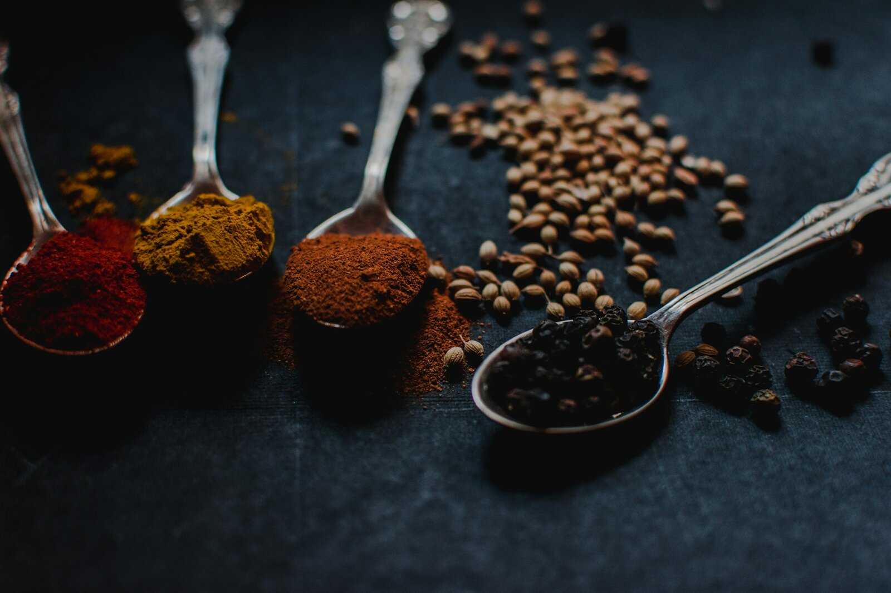
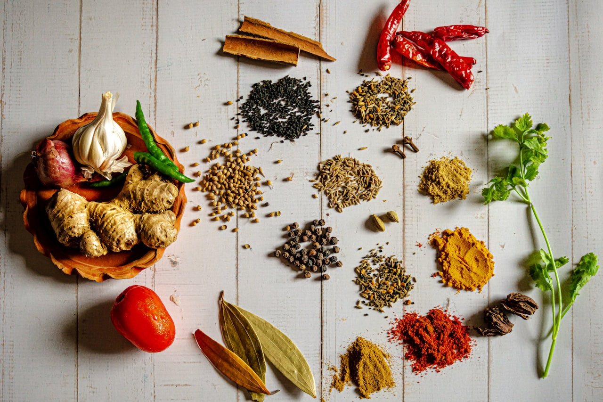
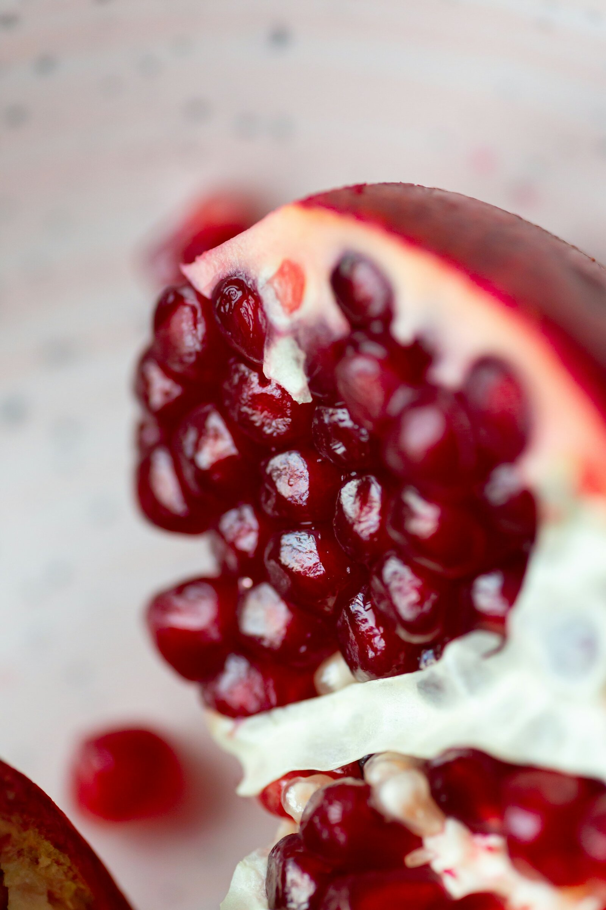

Lagat från grunden
Inga frysta sambusa, ingen pulversås. Allt går igenom våra händer — degen, fyllningen, kryddblandningen, garnityren.
Sambusa City är granne med Norrby — sprödbakade sambusa fyllda för hand, pizzor ur stenugnen och husmanskost lagad på plats. Två kök, ett bord.
Sambusa City började med en idé som inte ville släppas: att laga sambusan exakt som hemma, viken för hand varje morgon, och samtidigt servera pizzorna som Norrby redan älskade. Två kök som inte tävlar — som hjälps åt.
Vi öppnade i Borås för att smakerna skulle finnas kvar mitt i staden, inte bara hemma i ett kök. Alla är välkomna in — för en sambusa, en pizza, eller hela menyn.


Sambusan vänds aldrig industriellt: degen kavlas, fyllningen mäts, varje veckning är någons hand. Pizzorna bakas till beställning ur stenugnen — tunn botten, generös fyllning, ingen uppvärmning.
Det är inte komplicerat. Det är hemlagat — bara gjort med tid och omsorg.
Inga frysta sambusa, ingen pulversås. Allt går igenom våra händer — degen, fyllningen, kryddblandningen, garnityren.
Svenska protein, hela kryddor, riktig ost på pizzan. Inga försvunna led i kedjan — vi vet vad som hamnar på fatet.
Ingen ska känna sig osäker på menyn. Vi förklarar gärna — om kryddstyrka, om hur man äter, om vad som passar barn.
Sambusa City ligger på Norrby Tvärgata 13 i Borås — granne med en stadsdel som rör sig. Vi serverar både dem som känt sambusan sen barnsben och dem som möter den för första gången, och pizzorna är till för alla.
Kom in för en sambusa, en pizza eller en kvällsmåltid med vänner. Stanna en stund. Det är så vi tänker oss platsen.
Hitta oss
Sätt dig ner, beställ en sambusa, en pizza eller båda. Vi tar hand om resten.
Beställ online Aktiveras snart · Qopla